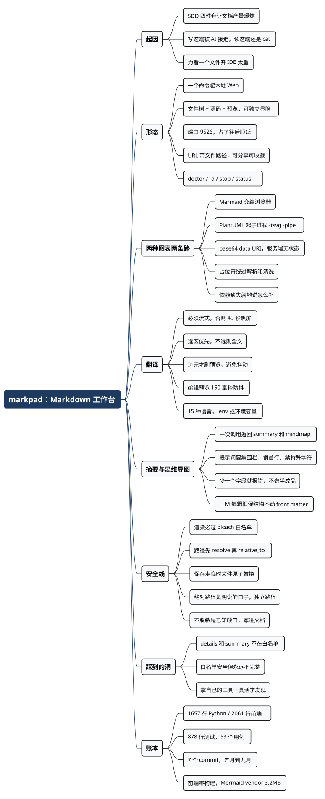

用 SDD 写代码之后，我每天读的 Markdown 比代码多——于是写了 markpad
Posted on 二 01 9月 2026 in Tech
| Abstract | 用 SDD 写代码之后，我每天读的 Markdown 比代码多——于是写了 markpad |
|---|---|
| Authors | Walter Fan |
| Category | learning note |
| Version | v1.0 |
| Updated | 2026-09-01 |
| License | CC-BY-NC-ND 4.0 |
大纲
展开看看
- 新瓶颈：SDD 把文档产量拉高了，读文档的工具却没跟上
- 它长什么样：一个命令，一个本地 Web，三块面板
- 两种图表两条路：Mermaid 交给浏览器，PlantUML 交给子进程
- 翻译为什么必须流式：一篇 spec 等 40 秒不动，你就不会用第二次
- 摘要加思维导图：一个 JSON 两个 key，我用得最多的功能
- 本地工具的安全线：该守的守，该开的口子明说
- 一个我自己踩到的洞：markpad 渲染不了我博客里的
<details> - 账本和可抄的部分
用 SDD（spec-driven development，先写规格再写代码）之后，我的目录里多了一堆东西。
拿 OpenSpec 举例，一个变更下面标配四件套：proposal.md 说要干什么，design.md 说为什么这么设计，tasks.md 拆任务，然后每个能力一份 spec.md。markpad 这个项目本身只有一个变更，openspec/ 下面就有 8 份 Markdown、514 行。旁边 gitman 那个项目 9 份。这还只是我自己的两个小工具。
再加上 AGENTS.md、README.md、各种 agent 的 skill 文件、每次 review 前 agent 顺手生成的分析报告——我现在一天里读 Markdown 的时间，比读代码的时间长。
问题是，写这一端已经被 AI 接走了，读这一端还是老样子：cat 出来一屏原始符号，| 和 # 和 --- 混在一起；想看 Mermaid 图，得复制到某个在线站点；想快速搞清一份 200 行 spec 讲了什么，得从头读到尾。
IDE 里的 Markdown 预览当然有，VS Code 那个我用了多年。但它有个前提：你得先把这个目录当成一个项目打开。 而我看文档的场景经常不是这样——临时收到一份别人的 design doc，或者在 ~/Downloads 里躺着一个从 agent 输出里存下来的分析报告。为了看一个文件开一个 IDE 窗口，有点重。
所以我写了 markpad。一句话：在任何一个有 Markdown 的目录里敲一个命令，浏览器里就出现一个能读、能改、能出图、能翻译、能总结的工作台。
六月的时候我写过一篇介绍，讲的是“有哪些功能、适合谁用”。这篇不重复那些，讲的是三个月后回头看，几个当时没写清楚的实现决定——包括两种图表为什么走两条完全不同的路、翻译为什么非流式不行、以及一个本地工具的安全线该画在哪。顺便交代几处变化：包管理从 Poetry 换成了 uv，环境变量从 LLM_* 加了 MP_ 前缀（避免和别的工具打架），多了一个我现在用得最多的摘要加思维导图功能。
它长什么样
cd openspec/changes/add-markdown-web-server-cli
markpad
输出：
markpad is ready.
Serving Markdown from: /Users/walterfan/workspace/walter/markpad/openspec/changes/add-markdown-web-server-cli
Open http://127.0.0.1:9526 in your browser to:
- read your Markdown files with live preview
- edit them with instant rendering
- translate or improve them with the LLM tools
也可以直接开一个文件，包括绝对路径：
markpad docs/guide.md --open
markpad /Users/me/notes/today.md --open
浏览器里是三块面板：左边文件树，中间 Markdown 源码，右边渲染后的 HTML。工具栏上三个小图标分别控制三块的显隐——只读的时候把编辑器关掉，只剩文件树加预览，这是我最常用的布局。
端口默认 9526，被占就往后顺延，最多试到 9626。这个设计是从 gitman 抄自己的：本地开发工具老是要抢端口，报错让用户自己换太不客气。
另外它是有状态的：markpad -d 起后台，markpad stop 停，markpad status 看有没有在跑，markpad doctor 不启服务只打诊断（LLM 配好了没、配置从哪来的、内容根目录在哪）。doctor --format json 给脚本用。
URL 里带着文件路径这一点也值一句。打开 docs/guide.md 之后地址栏是 http://localhost:9526/docs/guide.md，把这个 URL 发给同事（前提是他也在跑 markpad）或者收藏起来，回来还是那个文件、那个源码加预览的视图。实现上是一个兜底路由：任何路径都返回同一个 index.html，前端自己去解析路径加载文件。
两种图表，两条完全不同的路
这是整个项目里我觉得最值得说的一个设计决定。
Mermaid 和 PlantUML 都是“图表即代码”，看起来该用同一套机制处理。实际上我把它们分到了两条路上：Mermaid 在浏览器里渲染，PlantUML 在服务端起子进程渲染。
原因很简单：Mermaid 本身就是个 JS 库，浏览器里跑得好好的；PlantUML 是 Java 的，你不可能塞进浏览器。
所以后端渲染的时候做的事情也不一样。renderer.py 里先用正则把围栏代码块抠出来，按语言分流：
def replace_diagram(match):
info = (match.group("info") or "").lower()
source = match.group("body")
if info == "mermaid":
# 只占位，把源码转义后交给浏览器
token = f"@@MARKPAD_DIAGRAM_{len(placeholders)}@@"
escaped = html.escape(source)
placeholders.append(DiagramPlaceholder(
token=token,
html=f'<div class="diagram diagram-mermaid"><div class="mermaid">{escaped}</div>...',
))
return token
if info in {"plantuml", "puml"}:
# 服务端直接出图
token = f"@@MARKPAD_DIAGRAM_{len(placeholders)}@@"
placeholders.append(DiagramPlaceholder(token=token, html=render_plantuml_block(source)))
return token
return match.group(0)
PlantUML 那边是起一个进程，管道进管道出：
result = subprocess.run(
[command, "-tsvg", "-pipe"],
input=source.encode("utf-8"),
capture_output=True,
)
svg = result.stdout
encoded = base64.b64encode(svg).decode("ascii")
return f'<img alt="PlantUML diagram" src="data:image/svg+xml;base64,{encoded}">'
为什么用 base64 data URI 而不是写一个临时文件再给个 URL？ 因为临时文件要管生命周期：什么时候删、并发怎么办、进程崩了留一堆垃圾怎么办。data URI 让整个渲染保持无状态——一次请求进去，一段自包含的 HTML 出来，服务端不留痕迹。代价是 HTML 变大，但本地工具不心疼这点带宽。
这里有个坑：占位符必须绕过 Markdown 解析和 HTML 清洗这两道工序。 流程是“抠图 → 换占位符 → 渲染 Markdown → bleach 清洗 → 把占位符换回真 HTML”。如果顺序反了，让图表 HTML 先进 bleach，<svg> 和 data: 会被洗掉一半。占位符我用了 @@MARKPAD_DIAGRAM_0@@ 这种形式，因为它不含任何 Markdown 特殊字符，不会被解析器改动。
还有一个细节：markdown-it 会把独占一行的占位符包成 <p>@@MARKPAD_DIAGRAM_0@@</p>，所以替换的时候要先试带 <p> 的版本，再试裸的：
for placeholder in placeholders:
cleaned = cleaned.replace(f"<p>{placeholder.token}</p>", placeholder.html)
cleaned = cleaned.replace(placeholder.token, placeholder.html)
不然你会得到一个 <p> 里面套 <figure>，HTML 不合法，浏览器排版会跳。
PlantUML 没装怎么办？ 不报 500，也不静默吞掉，而是原地渲染一段说明：
PlantUML renderer unavailable. Set MARKPAD_PLANTUML_CMD
or install PlantUML so `which plantuml` prints a command path.
这是我给自己定的规矩：可选依赖缺失的时候，在缺失的那个位置告诉用户怎么补。 不要让人去翻日志，也不要装作没这块内容。
翻译为什么必须流式
工具栏上有个语言下拉框，15 种语言，默认简体中文。选中一段 Markdown，点 Translate，译文原地替换选区；不选就整篇翻。
第一版我写的是非流式的：POST 上去，等结果，一次性替换。跑一次发现不行——一篇 200 行的 spec，40 秒里屏幕上什么都不动。 用户不知道是在跑还是卡了，第二次就不会点了。
所以加了 /api/translate/stream，后端把 LLM 的 SSE 流转成 StreamingResponse 往下吐，前端一段段往编辑器里写。选区翻译尤其明显：你看着那一段一个词一个词被替换掉，中途觉得不对可以直接 Esc。
流完了才刷预览——这一点是有意的。流的过程里每来一个 token 就重渲染一次 HTML，右边会疯狂抖动，而且白白打服务端。所以翻译期间只更新编辑器，await streamTranslation(...) 返回之后才 renderPreview()。
顺便说编辑时的预览刷新：不是每敲一个字就渲染，而是 150 毫秒的防抖：
function schedulePreview() {
updateStats();
clearTimeout(state.renderTimer);
state.renderTimer = setTimeout(() => {
renderPreview().catch((error) => setStatus(`Render failed: ${error.message}`));
}, 150);
}
150 毫秒这个数字试出来的：低于 100 打字连打的时候会闪，高于 250 感觉上“跟不上手”。
翻译按钮什么时候能点？三个环境变量都齐了才能点，缺一个就是灰的，鼠标悬上去告诉你缺什么：
MP_LLM_BASE_URL=https://api.example.com/v1
MP_LLM_MODEL=your-model
MP_LLM_API_KEY=your-api-key
.env 也读，从你运行 markpad 的那个目录读，环境变量优先。这样可以给不同项目配不同模型，临时用环境变量覆盖还有效。base URL 写到 /v1 或者直接写到 /chat/completions 都行，代码里 _chat_completions_url() 会自己判断——这种小体贴能省掉一次“我明明配对了怎么 404”的排查。
摘要加思维导图：我用得最多的一个
前面说的都是读文档的辅助，这个是真正解决“我今天要读 20 份 spec”的那个功能。
点 Summarize，弹出一个对话框，上半是这份文档的摘要，下半是一张 Mermaid 思维导图，还带一个可展开的“看导图源码”。
实现上就一次 LLM 调用，关键在于让它一次返回两样东西，而不是调两次：
"content": (
f"Summarize the given Markdown document in {target_language} and outline "
"its structure as a Mermaid mindmap. Respond with ONLY a JSON object (no "
"code fences, no extra text) with exactly two string keys: "
f'"summary" — a detailed {target_language}-language summary covering the '
"document's purpose, main sections, key points/arguments, and conclusion; "
'"mindmap" — valid Mermaid mindmap syntax, whose first line is exactly '
"`mindmap`, followed by an indented root node derived from the document "
"title... Keep node text free of special characters like parentheses, "
"quotes, or colons."
),
三个提示词细节是踩出来的：
一，“no code fences”。 模型特别喜欢把 JSON 裹在 ```json 里面。光靠提示词挡不住，所以解析的时候还得兜一手：
text = raw.strip()
if text.startswith("```"):
text = text.strip("`")
text = text.removeprefix("json").strip()
二，"first line is exactly mindmap"。 Mermaid 的 mindmap 语法对第一行很挑，模型如果写成 graph TD 或者前面多个空行，浏览器里就是一片空白。
三，“节点文字里别放括号、引号、冒号”。 这条是被坑最多的。Mermaid mindmap 里 ( 和 [ 是节点形状语法，冒号也有特殊含义。模型很自然会生成 护栏一：argv 不是 shell 串 这种节点，然后整张图解析失败。这不是模型的错，是我一开始没告诉它输出要进一个对语法敏感的解析器。
摘要和思维导图两个字段少一个就报 502，不做“部分成功”：
if not isinstance(summary, str) or not isinstance(mindmap, str):
raise HTTPException(
status_code=502,
detail="LLM summarization response was missing summary or mindmap.",
)
理由和 gitman 里那条一样：一个宁可说“这次没做出来”的工具，比一个总能给你半成品的工具好用。 半张图比没有图更浪费时间——你得先花几秒钟才反应过来它是错的。
还有个 LLM 编辑框，在编辑器下面：写一句指令（“把这段改成更简洁的中文”、“给这个表格加一列说明”），点 Apply，流式改写选区或者全文。系统提示词里那条硬约束值得抄：
Preserve Markdown structure, front matter, links, tables, code blocks, and diagram code unless the instruction explicitly asks to change them.
不加这句，模型会顺手把你的 front matter 重排、把 Mermaid 代码块“优化”掉。
本地工具的安全线画在哪
这个项目我一开始想偷懒：反正只跑在 127.0.0.1，只服务自己机器上的文件，还需要什么安全考虑？
后来想明白了两件事。第一，它接受任意 Markdown 内容并渲染成 HTML，而 Markdown 允许内联 HTML。第二，它接受 HTTP 请求里的路径参数并读写文件。这两条任意一条出问题，都是实打实的洞。
所以守了这几条：
渲染必过 bleach。 白名单标签、白名单属性、协议只允许 http / https / data。所以你在 Markdown 里塞 <script> 或者 onerror=，预览里不会执行。你可能会说“我自己的文件我还会攻击自己吗”——但你会打开别人发的、agent 生成的、从网上抄的 Markdown。
路径不许逃出根目录。 每次解析都先 resolve 再检查从属关系：
resolved = (root / requested).resolve(strict=False)
try:
resolved.relative_to(root)
except ValueError as exc:
raise PathOutsideRootError("Path escapes the content root.") from exc
resolve() 会把 ../../ 和符号链接都摊平，之后 relative_to() 才有意义。顺序反了就白做。
保存是原子的。 先写 .文件名.tmp，再 replace() 过去：
tmp_path = file_path.with_name(f".{file_path.name}.tmp")
tmp_path.write_text(content, encoding="utf-8")
tmp_path.replace(file_path)
同一个文件系统上 replace() 是原子的。这样进程在写一半的时候被 kill，你的原文还在，不会留下半个文件。编辑器丢用户内容是最不可原谅的 bug，这十行值得写。
绝对路径是个明说的口子。 前面提过可以 markpad /Users/me/notes/today.md，也可以在左边搜索框里粘一个绝对路径直接打开。这明摆着绕过了根目录限制——所以我把它做成一条独立的 API（/api/absolute-file）和一条独立的解析函数，不和相对路径那条混在一起，并且加了两道额外检查：必须是绝对路径，必须是 Markdown 扩展名。
该开的口子明说，比假装没有口子安全。 如果我为了“看起来严格”把绝对路径塞进相对路径那条逻辑里绕一下，那才是真正危险的——以后谁改那段代码都不知道自己在动一条安全边界。
已知的缺口我也说清楚。 和 gitman 不一样，markpad 在把文档内容发给 LLM 之前 既不截断也不脱敏。你翻译一篇里面写着 API key 的文档，那个 key 就原样发出去了。这不是“还没做”，是我明确没做——一个 Markdown 编辑器不该猜哪段文字是秘密，而这个工具的定位是“你自己配自己的 LLM 端点”，责任在配置这一侧。不过它值得写在 README 里，我还没写。这条算欠着的账。
顺便，MP_LLM_VERIFY_SSL=false 这个开关我也留了，注释里写清楚了：只在你的 LLM 端点用可信自签证书的时候才关。 公司内网的 gateway 经常这样，不留这个口子工具在内网就用不了；不写清楚，就会有人为了消掉一个警告把它默认关掉。
一个我自己踩到的洞
写这篇文章的时候我顺手拿 markpad 打开了自己上一篇博客（就是讲 gitman 那篇），结果发现开头的“大纲”折叠块没了——<details markdown="1"> 和 <summary> 被原样转义成了文字。
查了一下，renderer.py 的 ALLOWED_TAGS 白名单里确实没有 details 和 summary：
>>> from markpad.renderer import ALLOWED_TAGS
>>> "details" in ALLOWED_TAGS, "summary" in ALLOWED_TAGS
(False, False)
这个洞挺有意思，因为它恰好说明了白名单机制的性格：白名单是安全的，也是永远不完整的。 我当初照着“常见语义标签”列了一份，压根没想到自己的博客会用 <details>。而黑名单机制不会有这个问题——但会有另一个更糟的问题：你漏掉的那个标签是能执行脚本的那个。
所以修法是加白名单，不是换机制。这两个标签本身不带脚本能力，open 属性也无害。补一行就行，但我打算连着一个测试一起提——能被一句 REPL 复现的 bug，一定能被一个测试锁住。
写在这里也是想说：一个工具最好的测试用户就是作者本人，而且必须真的拿它干活，不是跑一遍 demo 就算完。
这个工具花了多少
| 项 | 数字 |
|---|---|
| 后端 | 1657 行 Python（server.py 673、cli.py 486、files.py 208、renderer.py 161、models.py 89、ports.py 33） |
| 前端 | 2061 行（app.js 1049、styles.css 718、index.html 294），零构建步骤 |
| 测试 | 878 行，53 个用例，全绿 |
| commit 数 | 7 |
| 跨度 | 5 月 26 日到 9 月 1 日，业余时间 |
| 依赖 | fastapi、uvicorn、click、pydantic、markdown-it-py、bleach、watchfiles、websockets、httpx |
前端零构建是有意的。没有 npm、没有 webpack、没有 TypeScript 编译——app.js 就是一个浏览器直接跑的普通脚本，Mermaid 是一个 3.2MB 的 mermaid.min.js 直接 vendor 进仓库。这样安装路径只有一条：一个 Python 包，装完就能跑。一个本地小工具，用户不该为了看 Markdown 先装个 Node。
vendor 那 3.2MB 我犹豫过。走 CDN 更干净，但那意味着 markpad 在飞机上、在没网的会议室里就废了一半功能——图全渲不出来。离线可用这条我看得比仓库干净重要。
不过这条我只做了一半，得承认：Tailwind 还是走 CDN 的（index.html 里一行 <script src="https://cdn.tailwindcss.com">）。所以现在断网打开，图还在，排版会散。这是当初图省事留下的，vendor 一份 Tailwind 或者换成一份手写 CSS 都能解决，我还没动。一个原则如果只在一半的地方守，等于没守——这句话是骂自己的。
live reload 用的是 WebSocket 加 watchfiles，只推 Markdown 文件的变化：
async def _watch_and_send(root: Path, websocket: WebSocket) -> None:
async for changes in awatch(root):
payload = [
{"change": change.name, "path": path}
for change, path in changes
if _is_markdown_event(root, Path(path))
]
if payload:
await websocket.send_json({"type": "files-changed", "changes": payload})
过滤这一层不能省。awatch 会把 .git/ 里的每次索引变化、__pycache__ 的每个 pyc 都报上来，一次 git status 能触发几十个事件。文件索引那边也做了忽略目录（.git、.venv、node_modules、dist 那一串），不然在一个装了依赖的项目里，文件树会被 node_modules 里的 README 淹掉。
装的话一行：
curl -fsSL https://raw.githubusercontent.com/walterfan/markpad/main/bootstrap.sh | bash
装进 ~/.local/share/markpad/venv，命令链到 ~/.local/bin/markpad。卸载 ./install.sh uninstall。
可以直接抄的部分
如果你也在写这类“在当前目录起个本地 Web”的小工具：
-
不同渲染目标走不同路径，不要强行统一。 Mermaid 交给浏览器，PlantUML 交给子进程。硬凑一套抽象只会让两边都变扭。
-
占位符要绕过所有中间工序，并且不含特殊字符。 抠出来 → 换占位符 → 走完解析和清洗 → 换回去。顺序错了，清洗会吃掉你的图。
-
LLM 的输出只要给下游解析器吃，就在提示词里说清语法约束。 “别用括号、引号、冒号”这条不是啰嗦，是 Mermaid mindmap 真的会挂。
-
任何超过两三秒的 LLM 调用都做流式。 不是为了快，是为了让用户知道它在动。40 秒的黑屏等于这个功能不存在。
-
可选依赖缺失时，在缺失的位置说怎么补。 不要抛 500，不要静默跳过，就在那块位置渲染一句“装 X 或者设 Y”。
-
保存永远走临时文件加原子替换。 十行代码，换掉“进程被 kill 时用户文件只剩一半”这个风险。
-
该开的安全口子明说，单独一条代码路径。 绝对路径读写就是一个口子，那就给它独立的 API 和独立的校验，别混进主路径里绕。
-
本地工具优先离线可用，宁可 vendor。 3MB 的仓库体积，换飞机上还能看图。
-
拿自己的工具干真活。 我打开自己上一篇博客才发现
<details>渲染不出来。跑 demo 发现不了这种事。
总结：AI 把写的成本压下去了，读的成本还在原地
回到开头。SDD 好不好？好。让 agent 先写 proposal 和 design 再动手，代码质量确实不一样，几个月后回来也知道当初为什么这么定。
但它有个副作用没人提：它把文档产量提高了一个数量级，而人读文档的速度一点没变。
以前一个变更配一份 design doc，是因为写文档贵。现在写文档几乎免费了，四件套变成标配，甚至一次 review 就顺手生成三份分析报告。产出端的成本降到接近零，消费端还是那双眼睛。
这个不对称，就是我写 markpad 的全部理由。 它做的三件事——渲染、总结、翻译——本质上都是压缩：把符号压成排版，把 200 行压成一张思维导图和一段摘要，把英文压成你母语里读得快的那个版本。
有意思的是，这个思路和 gitman 是同一个。gitman 解决的是“我知道我想干什么，但翻译成 git 命令很费劲”；markpad 解决的是“这份文档里有我要的东西，但读完很费劲”。两个都不是让 AI 替我做决定，是让它把我和信息之间那段翻译工作接走。
我猜下一波真正有用的小工具，多半也长这样：不是又一个 agent，而是给已经爆炸的信息量配一副眼镜。
代码在 github.com/walterfan/markpad，Apache 2.0，1657 行 Python 加 2000 行没有构建步骤的前端。欢迎抄，也欢迎告诉我 ALLOWED_TAGS 里还漏了哪个标签。
全文思维导图
@startmindmap
<style>
mindmapDiagram {
node {
BackgroundColor #F8F9FA
RoundCorner 10
Padding 10
FontSize 13
}
:depth(0) {
BackgroundColor #1E3A5F
LineColor #1E3A5F
FontColor white
FontSize 18
FontStyle bold
}
:depth(1) {
FontSize 15
FontStyle bold
}
:depth(2) {
FontSize 13
}
}
</style>
* markpad：Markdown 工作台
** 起因
*** SDD 四件套让文档产量爆炸
*** 写这端被 AI 接走，读这端还是 cat
*** 为看一个文件开 IDE 太重
** 形态
*** 一个命令起本地 Web
*** 文件树 + 源码 + 预览，可独立显隐
*** 端口 9526，占了往后顺延
*** URL 带文件路径，可分享可收藏
*** doctor / -d / stop / status
** 两种图表两条路
*** Mermaid 交给浏览器
*** PlantUML 起子进程 -tsvg -pipe
*** base64 data URI，服务端无状态
*** 占位符绕过解析和清洗
*** 依赖缺失就地说怎么补
** 翻译
*** 必须流式，否则 40 秒黑屏
*** 选区优先，不选则全文
*** 流完才刷预览，避免抖动
*** 编辑预览 150 毫秒防抖
*** 15 种语言，.env 或环境变量
** 摘要与思维导图
*** 一次调用返回 summary 和 mindmap
*** 提示词要禁围栏、锁首行、禁特殊字符
*** 少一个字段就报错，不做半成品
*** LLM 编辑框保结构不动 front matter
** 安全线
*** 渲染必过 bleach 白名单
*** 路径先 resolve 再 relative_to
*** 保存走临时文件原子替换
*** 绝对路径是明说的口子，独立路径
*** 不脱敏是已知缺口，写进文档
** 踩到的洞
*** details 和 summary 不在白名单
*** 白名单安全但永远不完整
*** 拿自己的工具干真活才发现
** 账本
*** 1657 行 Python / 2061 行前端
*** 878 行测试，53 个用例
*** 7 个 commit，五月到九月
*** 前端零构建，Mermaid vendor 3.2MB
@endmindmap

本作品采用知识共享署名-非商业性使用-禁止演绎 4.0 国际许可协议进行许可。 欢迎在我的个人网站 https://www.fanyamin.com 访问原文并评论。